Body archetype trial
Body rig and fitted outfits approved; Dress is provisional. Body-owned anchors drive the full catalog, but Dress is retained as engineering proof and deferred for a dedicated visual pass before its art is considered final.
- Compact — Short vertical rhythm, grounded stance, and broad readable shoulders.
- Balanced — Neutral control silhouette without treating it as the normative body.
- Large-frame — Width concentrated at the shoulder line, with a strong taper toward the hem.
- Tall — Long, narrow vertical rhythm rather than a stretched balanced capsule.
- Soft — Sloped shoulders and lower-volume roundness without caricature.
Garment, lanyard, and pose proof
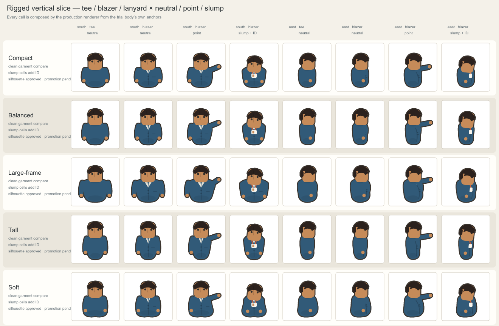
Complete pose rig — all authored source facings
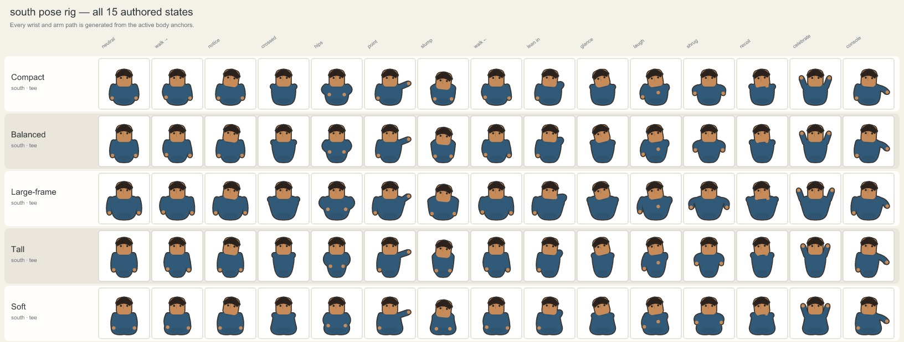
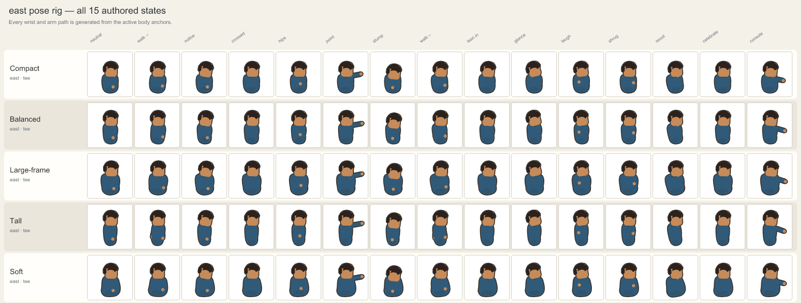
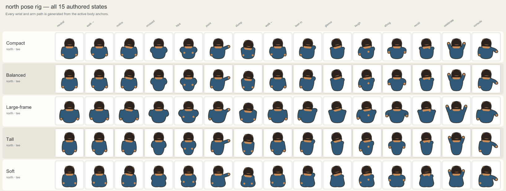
Wrist and held-object policy
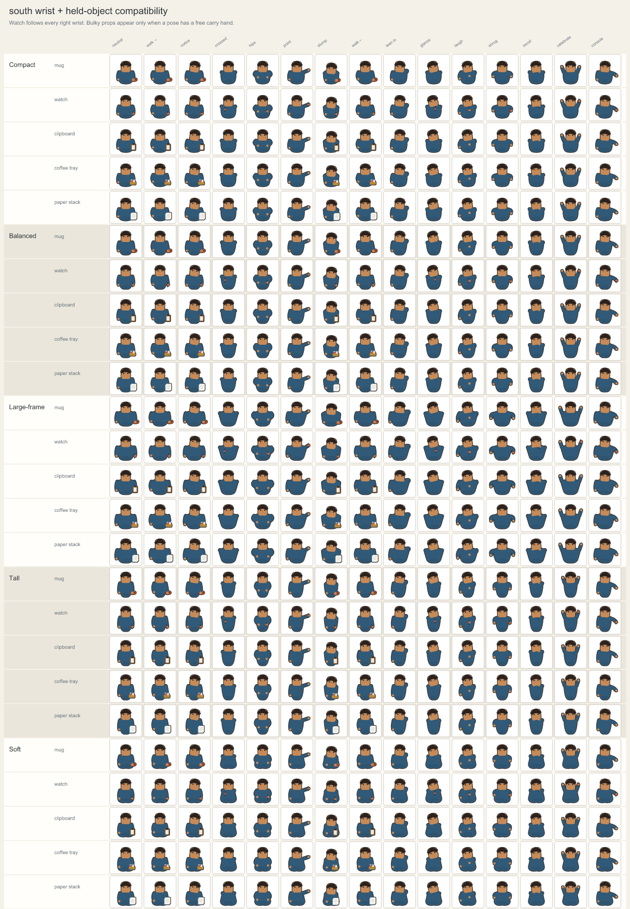
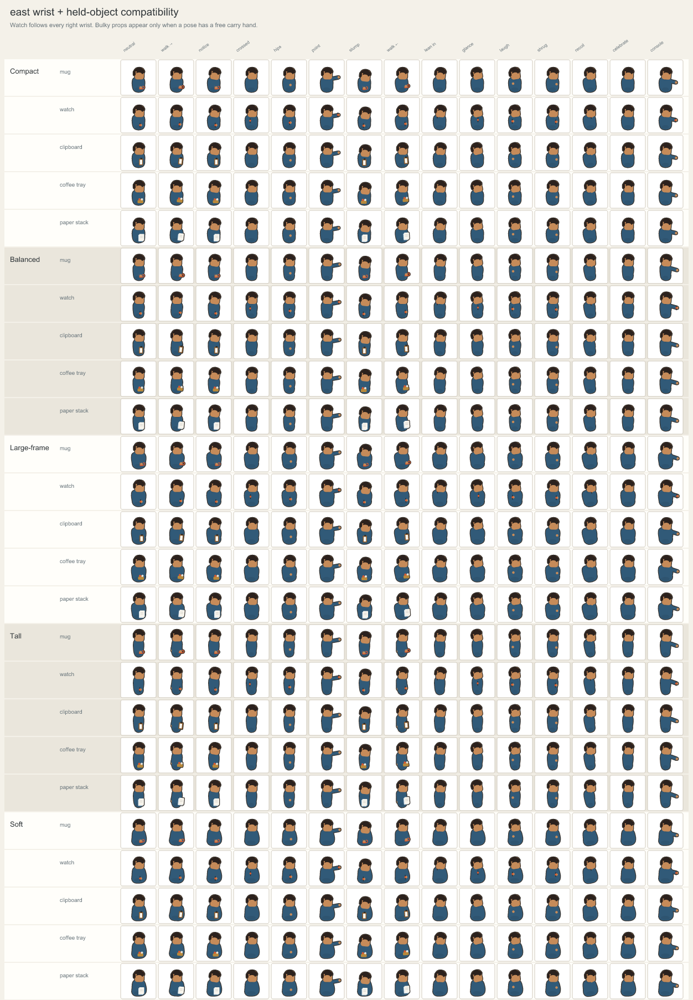
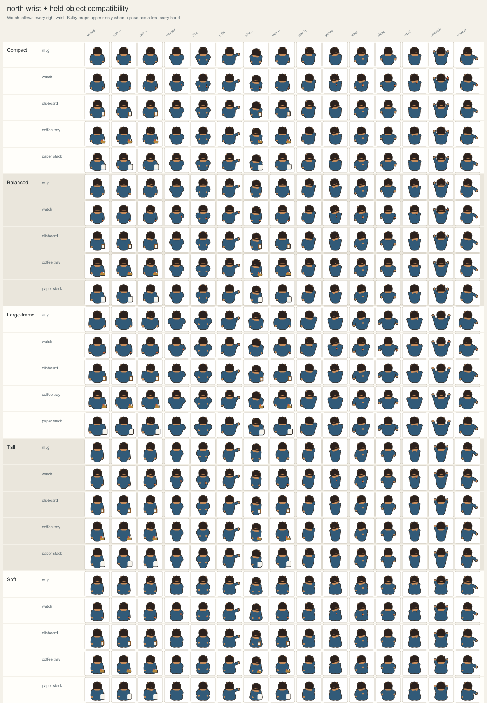
Complete outfit fit
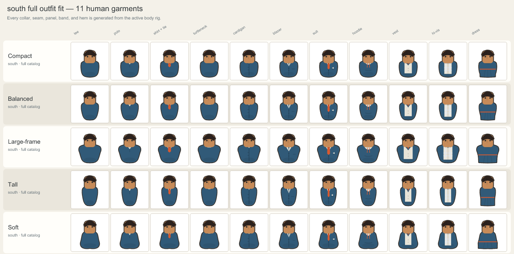
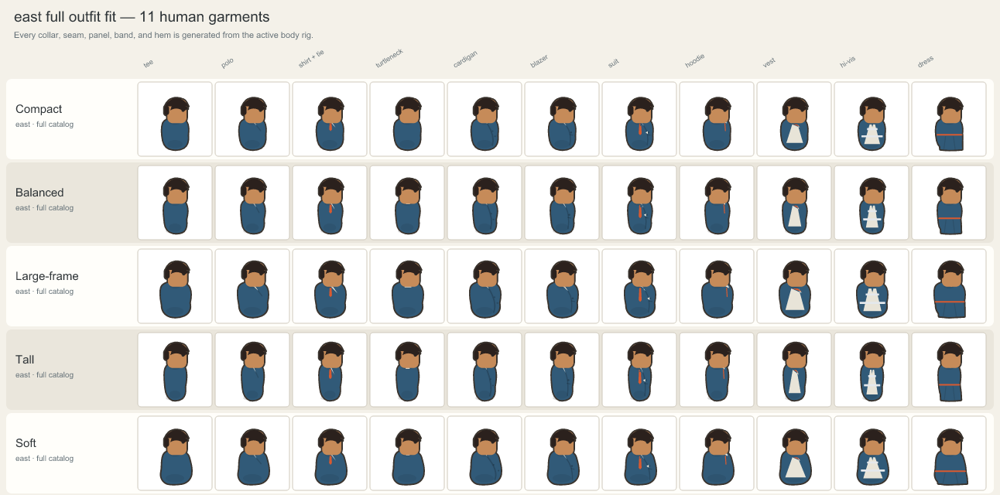
Dress silhouette study — provisional
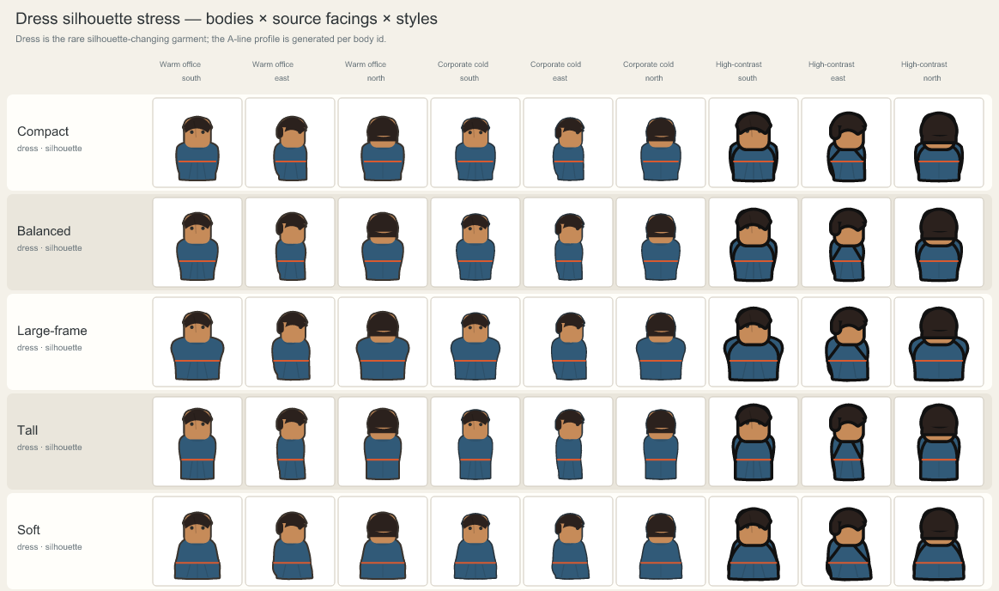
Outfit game-scale strip
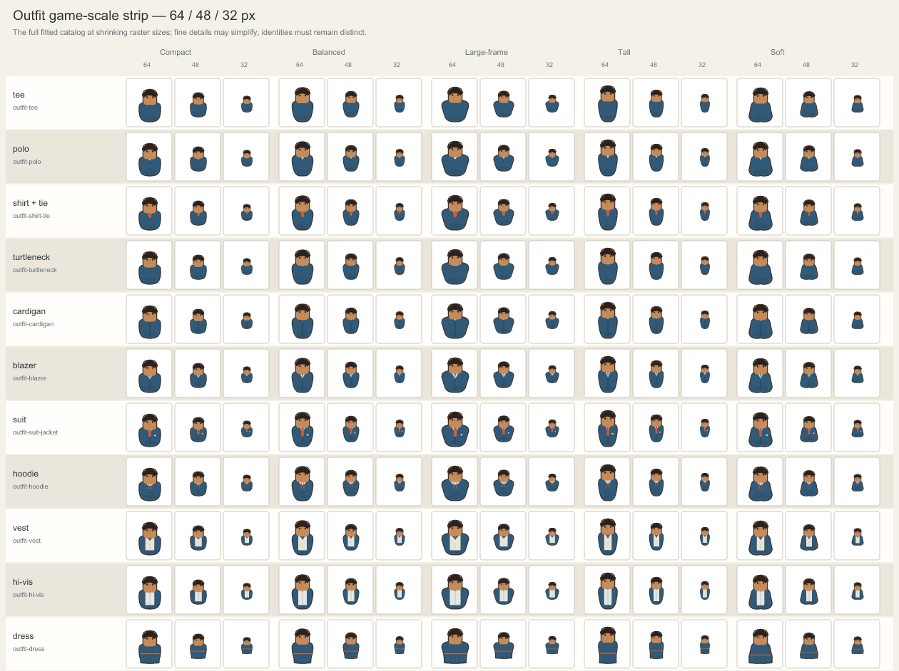
Characters through the production compositor
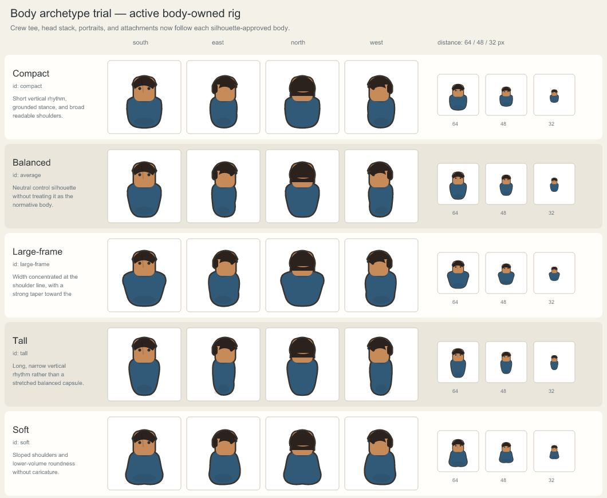
Flat silhouettes
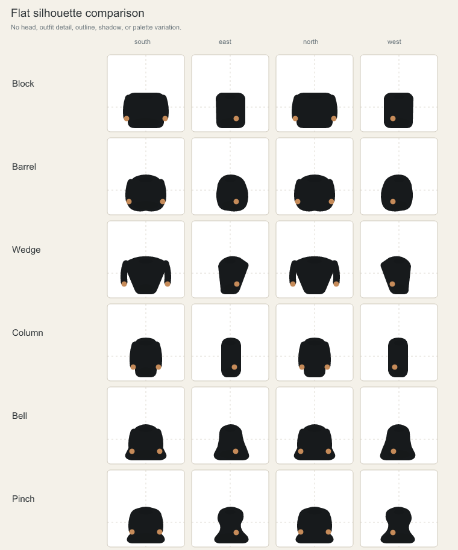
Active sub-anchor blueprint
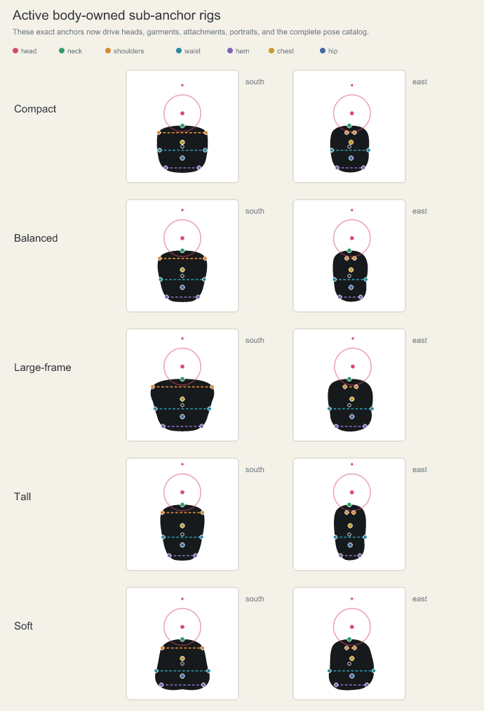